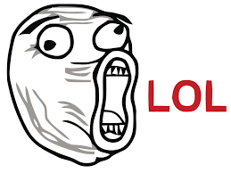
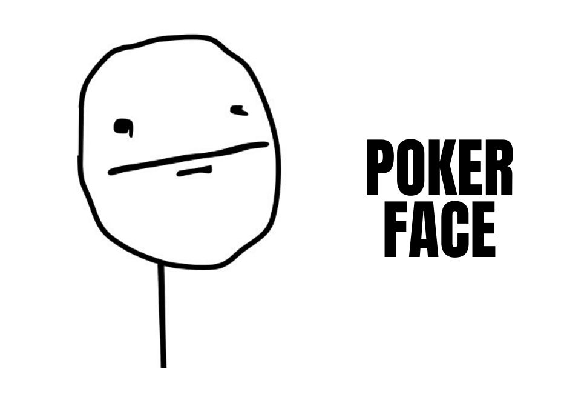
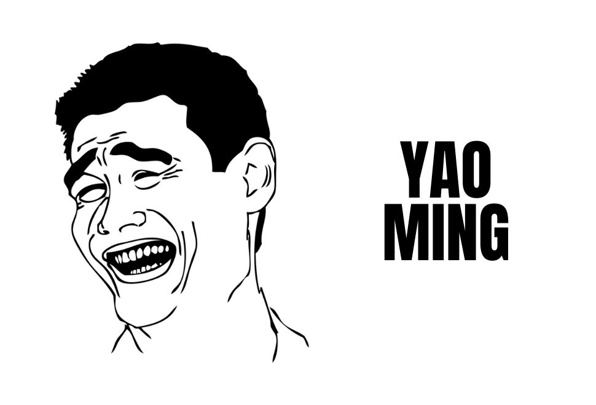
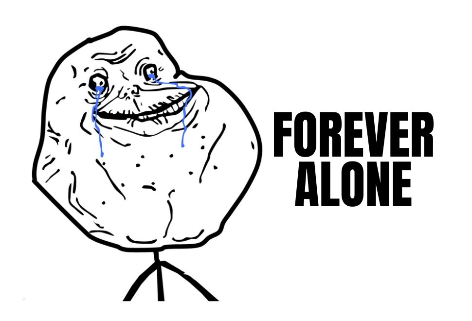

Actualmente los memes son parte de nuestra vida diaria y se han vuelto esenciales en nuestra manera de comunicarnos, pero si eres un centennial, debemos decirte que no, los memes no han existido desde siempre; tan es así que apenas a finales de 2018 la Real Academia Española adoptó el término y lo define como imagen, video o texto, por lo general distorsionado con fines caricaturescos, que se difunde principalmente a través de internet
Estos son algunos de los primeros memes en hacerse virales
Laugh out loud, o reírse en voz alta en español, se refiere a este singular meme que dista mucho de los memes a los que acostumbramos ver hoy en día. Este fue uno de los primeros en aparecer en internet, allá por el 2010. ¿Cuándo se usaba? Simplemente cuando una situación era muy graciosa o divertida.
¿Te han trolleado o hecho una broma? Pues este meme que data más o menos de 2008 , aplicaba perfectamente para la situación. ¡Hasta una canción tuvo! Para escucharla puedes buscarla como trololol.
Se trata de un rostro con poca expresión que podía usarse en situaciones vergonzosas y se volvió uno de los más famosos.
Este meme surgió de una ilustración del jugador de baloncesto Yao Ming , cuya expresión encajaba en cualquier situación en la que tu respuesta fuera un: bitch please. ¿Cuándo surgió? Allá por 2009, ¡hace más de una década!
Para usar este meme, no necesitabas estar precisamente solo, simplemente estar decepcionado o triste con algo. ¡Pero que no decaiga el ánimo! Era perfecto para exagerar situaciones.
